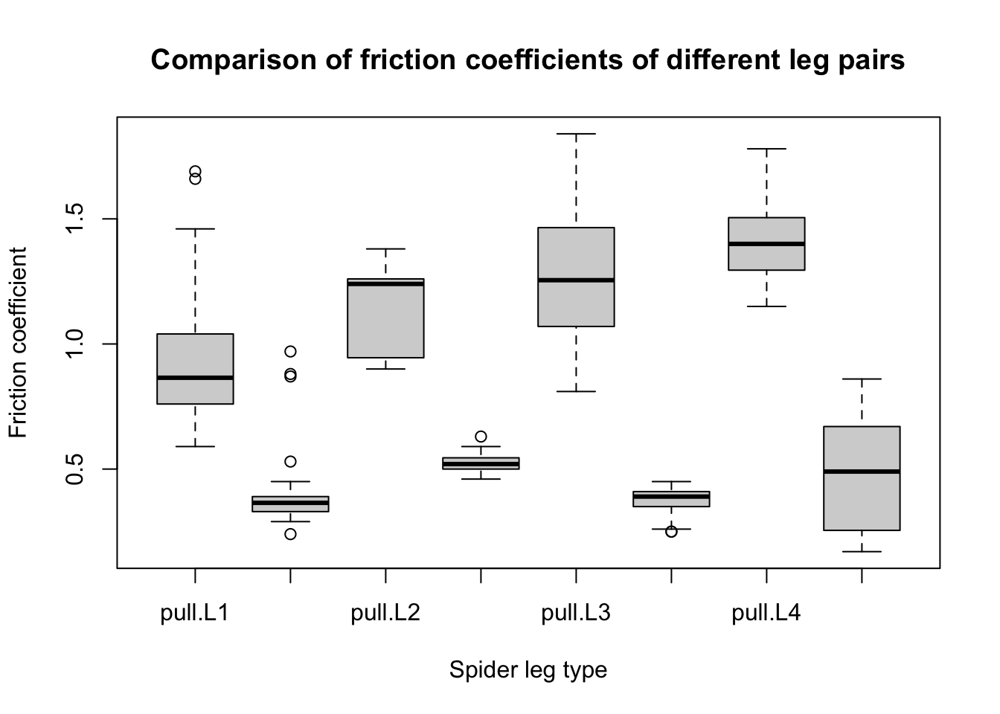
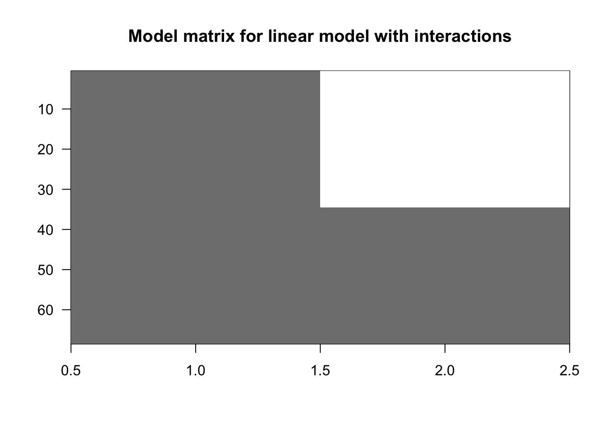
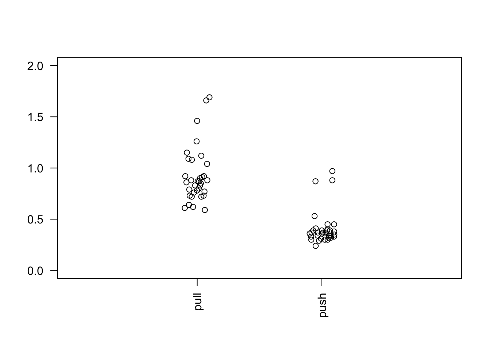
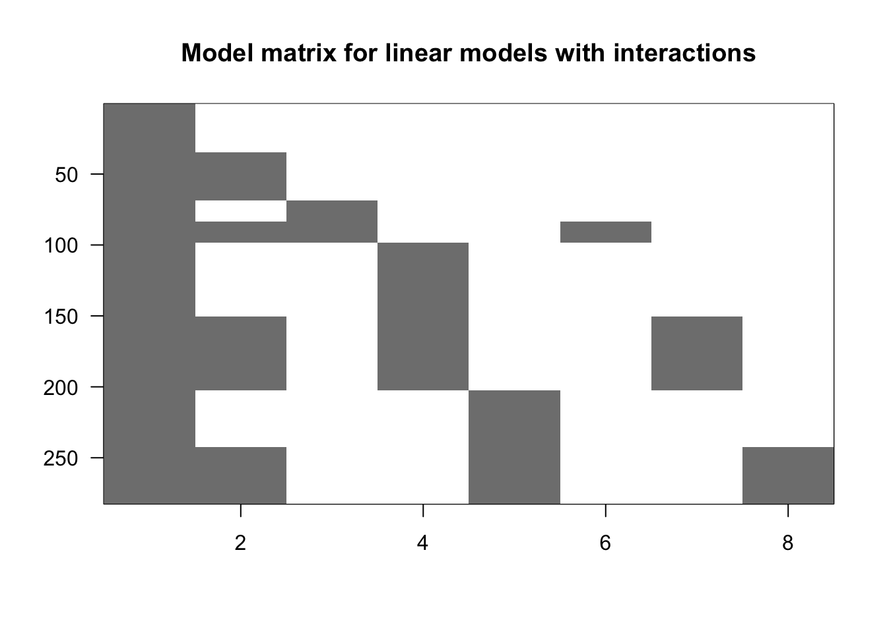

Spiders have 4 leg pairs. Each leg pair is labelled L1 - L4. Cupiennius. salei spider tarsas and claw tuft were collected, air dried, then performed pulling / pushing simulations. Friction on each leg pair samples were measured via force transducer.
Friction coefficients were recorded for each leg pair during pulling, and pushing movement.
The overview of boxplot data depicts higher friction coefficients in pulling movements. Early interpretations: leg pair L4 has a notably wider range of friction coefficients for pushing movements, suggesting pushing movement (moving away/backwards/rotate) is predominantly performed with the back leg pair (L4).
boxplot(spider$friction ~ spider$type*spider$leg, main ="Comparison of friction coefficients of different leg pairs", ylab ="Friction coefficient", xlab ="Spider leg type")

spider.sub <- spider[spider$leg =="L1",] # filter L1 leg pair subset (rows, keep matrix) [r,] from spider datasetX <-model.matrix(~type, data = spider.sub) # filter L1 pairs by pull / push typescolnames(X)
[1] "(Intercept)" "typepush"
imagemat(X, main ="Model matrix for linear model with interactions")

First column (intercept) = 1s (typepull), second column is half 0, half 1 (typepush, typepull respectively). I.e. dataset involves 2 friction coefficients: typepull, and typepush (baseline intercept value + typepush offset).
stripchart(split(spider.sub$friction, spider.sub$type), # plot friction coefficients for L1vertical =TRUE, pch =1, method ="jitter", las =2,xlim =c(0,3), ylim =c(0,2))

Above dataset was modelled with one variable for demonstration of interactions. Linear models are typically performed with 2< variables:
type = pull / push
leg = L1-L4
Generate intercept (typepull L1), typepush (for all leg pairs):
# X <- model.matrix(~type, data = spider) # filters into pull (intercept) and push types for all leg typesX <-model.matrix(~type + leg, data = spider) # filtershead(X)
col3 (L2 leg pair) has a considerably lower range of values than col4 (L3), suggesting fewer range of friction coefficient data for L2 than the other leg pairs.
sum(spider =="L2")
[1] 30
sum(spider =="L3")
[1] 104
sum(spider =="L4")
[1] 80
Fit the linear model: friction against leg pair + type (pull/push). Use + to simulate offset/additive effect.
# pch = dot shape, las = x-axis value text orientation
Friction coefficient of each LegPair/Type is not equivalent to the mean - the above demonstration assumes equal variance across all leg pull/push groups.
Where we cannot assume equal variance, data must be transformed e.g. via log or sqrt, to reflect the variance, then use lm().
Or, use Welch’s t-test or Wilcoxon rank sum for unequal variance data, without needing to transform values.
The above coefficients compare each group to the intercept (L1 pull).
To compare coefficients between groups L2 and L3, use contrast(): subtract L3 coefficient from L2:
library(contrast)L3vsL2 <-contrast(fit2, list(leg ="L3", type ="pull"), list(leg ="L2", type ="pull"))L3vsL2
lm model parameter contrast
Contrast S.E. Lower Upper t df Pr(>|t|)
-0.01142949 0.04319685 -0.0964653 0.07360632 -0.26 277 0.7915
# or, equivalent to (produces same value as contrast():coefL3vsL2 <- coef[3] - coef[2]coefL3vsL2
legL3
-0.01142949
Contrast = change from L3 to L2 = -0.1142949 friction coefficient
Interactions
The above compares coefficient for each leg pair against the baseline reference (L1 pull and L1 typepush). The above demonstration uses coefficient leg + type. The + acts as a fixed offset, to add a universal typepush coefficient, to add onto each leg pull coefficient.
Leg * type describes the interaction between each group: the effect of typepush differs for each leg pair. This introduces new typepush coefficients for L2, L3, L4, instead of using L1 typepush as a universal/fixed offset for leg pushing.
X <-model.matrix(~ type*leg, data = spider)colnames(X)
imagemat(X, main ="Model matrix for linear models with interactions")

Fit the new X model matrix to linear model lm() to reflect typepush of each leg pair:
fit3 <-lm(friction ~ type*leg, data = spider)summary(fit3)
Call:
lm(formula = friction ~ type * leg, data = spider)
Residuals:
Min 1Q Median 3Q Max
-0.46385 -0.10735 -0.01111 0.07848 0.76853
Coefficients:
Estimate Std. Error t value Pr(>|t|)
(Intercept) 0.92147 0.03266 28.215 < 2e-16 ***
typepush -0.51412 0.04619 -11.131 < 2e-16 ***
legL2 0.22386 0.05903 3.792 0.000184 ***
legL3 0.35238 0.04200 8.390 2.62e-15 ***
legL4 0.47928 0.04442 10.789 < 2e-16 ***
typepush:legL2 -0.10388 0.08348 -1.244 0.214409
typepush:legL3 -0.38377 0.05940 -6.461 4.73e-10 ***
typepush:legL4 -0.39588 0.06282 -6.302 1.17e-09 ***
---
Signif. codes: 0 '***' 0.001 '**' 0.01 '*' 0.05 '.' 0.1 ' ' 1
Residual standard error: 0.1904 on 274 degrees of freedom
Multiple R-squared: 0.8279, Adjusted R-squared: 0.8235
F-statistic: 188.3 on 7 and 274 DF, p-value: < 2.2e-16
coefs <-coef(fit3)
P values compare significance between L2 typepush vs L1 typepush (reference). typepush:legL2 has p > 0.05. However, typepush:legL3 has significant p < 0.05.